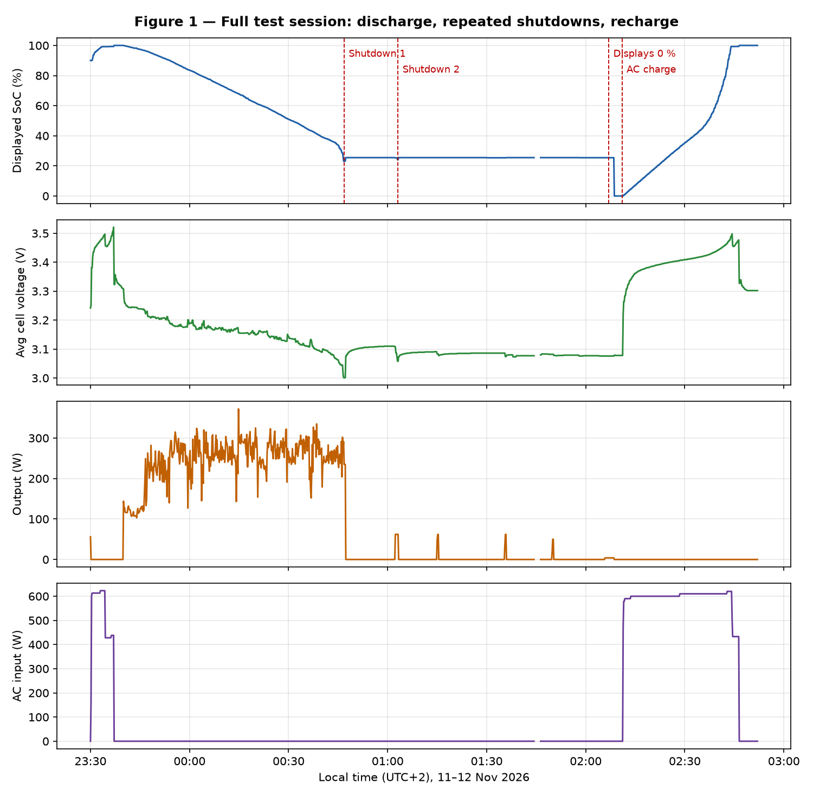
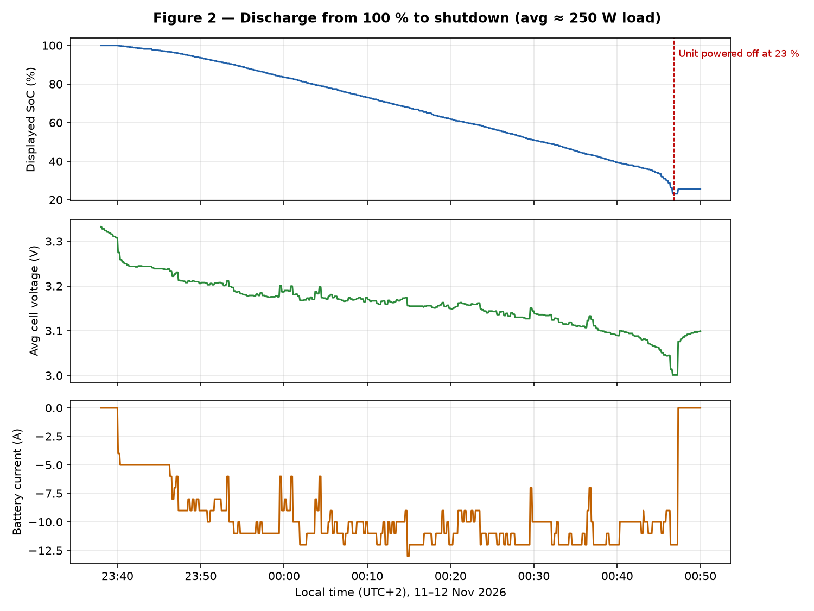
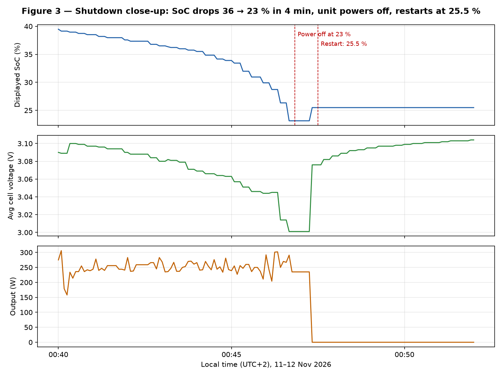
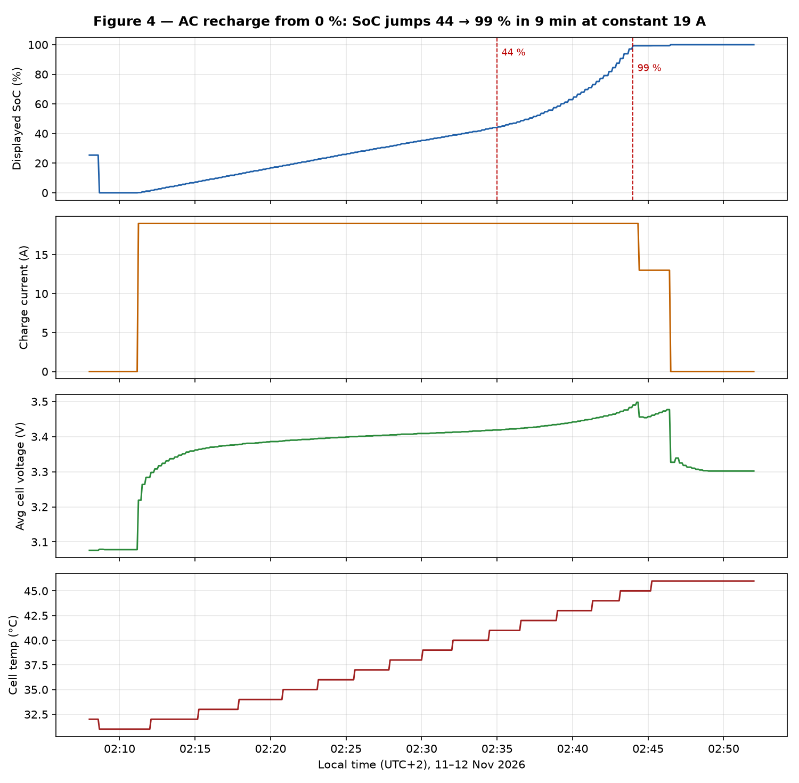
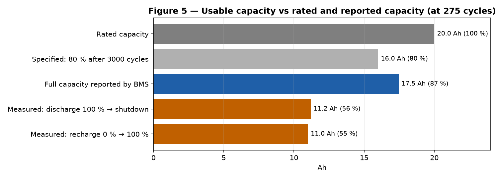

Diagnosis: early shutdown and loss of usable battery capacity
Product
EcoFlow RIVER 2 Max (EFR610), 512 Wh / 20 Ah LiFePO4
Serial number
R611••••••••0475
Report date
12 November 2026
Battery cycle count
275 (as reported by the unit)
1. Fault summary
The unit switches off completely under load while the display still shows 20–25 %.
The measured usable capacity is about 11 Ah, or 55 % of the rated 20 Ah, after 275 cycles. The specification states 80 % or more after 3000 cycles.
The fault persists after more than 5 full discharge/recharge cycles (battery calibration).
The discharge and charge limits are set to 0–100 % and the firmware is up to date.
2. Symptoms in normal use
The unit switches off completely (screen dark) while powering a load, at about 25 % displayed charge. With loads above 200 W this happens at about 20 %.
When switched back on, it shows a higher charge (25 %, in earlier cases 33 % or 47 %) and runs normally with no load connected.
Connecting any load again makes it switch off within seconds. After several attempts the display drops to 0 %.
From that point it recharges normally to 100 %.
Runtime on the same use has fallen from 3.5–4 hours to about 2.5 hours.
3. Steps already taken
More than 5 full calibration cycles: discharged until the unit switched itself off, then recharged on AC to 100 % without interruption. There was no improvement.
App settings checked: discharge limit 0 %, charge limit 100 %. The firmware is the latest version offered in the app.
The unit is used and stored indoors and has not been opened or modified.
4. Test performed on 11–12 November 2026
Method: the unit's battery management system (BMS) data was recorded from the EcoFlow account every 5–10 seconds during one complete cycle:
Charged on AC to 100 %.
Discharged with a computer load (about 250 W on average) until the unit switched itself off.
Switched back on and loaded again with light loads (4–62 W) until the display showed 0 %.
Recharged on AC to 100 % without interruption, with nothing connected.
Time (local)
Event
Displayed charge
Avg cell voltage
Load
23:39
Charger disconnected, discharge starts
100 %
3.31 V
—
00:46:50
Unit switches off (1)
23 % (25 % after restart)
3.00 V at 12 A
≈ 235 W
01:03:10
Unit switches off (2)
24 % (25 % after restart)
3.06 V at 2 A
≈ 62 W
01:15 – 02:06
5 more restarts; each switches off within 5–20 s under load
25 % each time
3.07–3.08 V
4–62 W
≈ 02:07
Display drops to 0 %
0 %
3.08 V at rest
—
02:11 – 02:46
AC recharge, 0 → 100 % in 35 minutes
0 → 100 %
→ 3.34 V
≈ 600 W input
5. Results
Quantity
Measured
Reference
Charge delivered, 100 % → shutdown
≈ 11.2 Ah (≈ 281 Wh at the battery, 275 Wh at the outputs)
20 Ah / 512 Wh rated
Charge accepted, 0 % → 100 %
≈ 11.0 Ah (≈ 298 Wh at the battery, 348 Wh from the wall)
20 Ah / 512 Wh rated
Usable capacity vs rated
≈ 55 %
≥ 80 % after 3000 cycles (specification)
Full capacity reported by the BMS
17.46 Ah (87 %)
—
State of health reported by the BMS
97 %
—
Cycle count
275
3000 rated
Cell temperature during discharge
26–35 °C
−10 to 45 °C allowed
6. Assessment
The battery holds only about 55 % of its rated capacity. The discharge and the recharge measurements agree at about 11 Ah.
The usable range ends early at both the bottom and the top.
At the bottom, the unit reported 0 % with an average resting cell voltage of 3.08 V.
At the top, charging ended at an average cell voltage of only 3.49 V, and the displayed charge jumped from 44 % to 99 % in 9 minutes at a constant 19 A (Figure 4).
This pattern indicates that one or more cells with reduced capacity are limiting the whole series pack. A defective cell is suspected. The unit reports only an average cell voltage, so the individual cell cannot be identified from outside.
The battery management system still assumes about 17.5 Ah. This is why the display shows 20–25 % when the unit switches off, and why it reads 25 % again after each restart.
This is not consistent with normal wear. The unit has used 275 of its 3000 rated cycles (9 %) but has lost about 45 % of its capacity. Its own BMS reports a state of health of 97 %.
Settings, firmware, temperature and calibration have been ruled out (Section 3).
Figures





All values are as reported by the unit's own battery management system. The current is reported in whole amperes, so the capacity figures are accurate to about ±5 %. The short gaps in the curves are periods when the unit was switched off. The full recorded data is available on request.